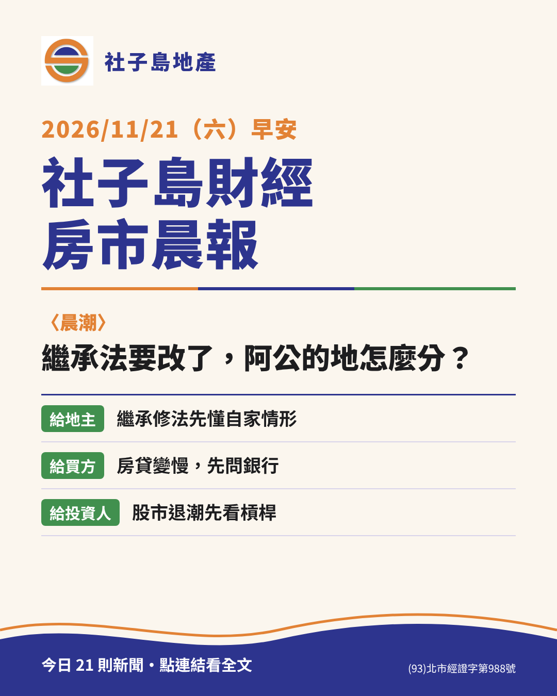

2026/11/21 (六) 早安
社子島財經房市晨報｜繼承法要改了，阿公的地怎麼分？
這一週，台股四天跌掉七千多點，週五單日再跌2,393點；但房市的數字沒有跟著崩：北市豪宅交易年增近兩成，士林北投占比往上爬。錢從股市退下來會不會走進房市？銀行的房貸卻是「又貴又慢」。今天 21 則，週末慢慢讀，點標題就能讀原文。
〈潮汐表〉今天的三道潮水
- 給地主繼承修法草案：沒有子女、和兄弟共同繼承時，配偶從二分之一提高到三分之二；還沒過立法院，先把家裡的情形弄清楚。
- 給買方銀行房貸審核從一個月拉長到兩個月；看好房子，先問銀行，再簽約。
- 給投資人台股一週跌掉7,641點、融資大減637億；股市退潮時，先看自己的槓桿。
〈晨潮〉正事白話講
繼承法要改了，阿公的地怎麼分？
昨天在威靈廟，阿公問我們：「聽講法律欲改，人若過身，某佮兄弟仔分財產的比例無仝款矣。阮若是先走，阮某佮阮小弟，這塊地到底欲按怎分？這馬就愛先準備啥物無？」阿公，這題是正事，我們今天用白話一次講清楚。
先講新聞。行政院11月19日通過《民法繼承編》部分條文修正草案：沒有立遺囑、由配偶和兄弟姊妹一起繼承時，配偶的應繼分從二分之一提高到三分之二，兄弟姊妹合起來分三分之一。行政院舉的例子是900萬元遺產，配偶原本分450萬，修法後可分600萬。草案也增訂「繼承人特別貢獻」，照顧過被繼承人的家人可以多分；禁止分割遺產的期限，從十年縮短為五年。不過，這還只是草案，要等立法院審議通過、公布施行才算數。
再講阿公最在意的：小弟會不會分到？要看家裡有沒有子女。依現行《民法》，繼承的順序是子女（直系血親卑親屬）第一、父母第二、兄弟姊妹第三；配偶不排順序，跟著前面有人的那一順位一起分。所以阿公如果有子女，地是太太和子女分，小弟不會輪到；只有沒有子女、父母也都不在了，才是太太和小弟一起分。這次要改的，就是這種情形下兩邊的比例。
還有一件事已經定了：今年8月修正公布的《民法》，刪除了兄弟姊妹的「特留分」，報導指出將在2027年2月17日施行。意思是，施行以後，阿公如果立了合法的遺囑，把地全部留給阿嬤，小弟不能再主張至少要分一份。各家媒體對施行日期的說法不完全一致，實際以總統令與行政院公告為準。
繼承修法，先記這四件事
- ① 草案：配偶與兄弟姊妹共同繼承，配偶 1/2 → 2/3（待立法院）
- ② 有子女，兄弟姊妹不會繼承；看順序再看比例
- ③ 兄弟姊妹特留分已刪除，施行後遺囑更能照您的意思
- ④ 繼承登記、遺產稅申報都是 6 個月內
那現在要準備什麼？我們建議三件事。第一，把家裡的人列清楚：有沒有子女、父母是否健在、兄弟姊妹幾位，先算出現在誰會繼承。第二，想清楚自己的意思，用合法的方式寫成遺囑，自書、公證都有法定格式，最好找律師或地政士確認。第三，別讓地「沒人辦」：繼承發生後，要在六個月內向地政事務所申請繼承登記，遺產稅也要在六個月內申報；拖太久，地政機關會列冊管理，最後甚至可能被代為標售。
繼承不是只有分錢，也是把一家人的心意交代清楚。阿公的問題，很多島上的家庭都有；細節每家不同，歡迎打電話來，我們陪您把家裡的情形一筆一筆對清楚。往下滑，今天的新聞，最後在〈廟口泡茶區〉等您。
——社子島地產團隊
主商圈：社子島・北士科・關渡洲美平原1 則
北市總價7,000萬以上住宅交易年增近兩成，北士科被點名是利多，士林、北投占比攀升；社子島區段徵收計畫仍在內政部審議，本週沒有新的官方進度
大台北：台北市・新北市・基隆1 則
北台10月推案金額破千億、月增33%，新北三重、板橋、新莊仍有千坪級住宅基地布局
其他縣市：新竹・台中（離台北由近到遠）2 則
台積電北中南擴廠、園區就業人口破35萬，但各地房市反應不一；台中公寓一年平均總價少了202萬
稅務與法律實務1 則
實價登錄申報寫錯會被罰，台南永康地政事務所提供申報前預審；繼承修法的白話說明，請看今天〈晨潮〉
土地・區段徵收・工業地產2 則
市場冷，建商仍低調買地；健身產業擴張，帶動中大型商用空間需求，租用前要先確認使用分區
都更・危老1 則
三重一處危老案施工挖倒鄰房，接手的建商把倒塌公寓一起整合，基地擴大近五成
全台房市・預售3 則
六都前10月大樓總價全面上漲、公寓卻有跌價；40年老公寓和老大樓誰更有價值，關鍵還是地段；下週房市有哪些話題
利率・房貸・資金3 則
10月五大銀行新承做房貸創一年半新高，主要是青安末班車撥款；經濟日報專題：審核從一個月拉長到兩個月，也有人轉向壽險借房貸
交通建設與生活1 則
東北季風減弱，週六到週一連三天晴朗、白天回暖，清晨仍涼；下週二鋒面再來
今日財經大事6 則
台股20日收36,033點、跌2,393點，史上第三大跌點，本週累計跌7,641點；融資單日大減637億；卓揆連兩天召集財經部會；立法院三讀普發現金2萬元；美股20日那斯達克跌5.28%
〈阿公講古〉
週六早上，天終於放晴了。阿公沿著福安河濱公園慢慢走，草地上還有一層薄薄的露水，他在老榕樹下的石椅坐了下來。
聽我們講完繼承的事，阿公點點頭：「早前的人，講地是祖公仔留落來的，毋敢賣，嘛毋捌寫啥物遺囑。結果一代傳一代，一塊地分甲十幾个名，欲做啥物攏愛逐家蓋印仔。」
他看著遠遠的河面，笑笑說：「阮這馬知影矣，有話愛趁這馬講予清楚，莫留予囝孫冤家。」
過了一會兒，阿公拍拍膝蓋站起來：「這禮拜恁講碼頭的日頭、浮汕的名、關渡的鳥仔、島頭的日頭落山，閣講繼承。下禮拜，欲閣帶阮去佗位行行咧？」
阿公的問題，我們明天回答。
〈廟口泡茶區〉
阿公從公園走回廟口，熱茶剛好泡開。地是祖公仔留下來的，也是要交給下一代的；早一點把話講清楚，一家人就少一分煩惱。
想找一塊地，不只看價格：使用分區、建蔽率、容積率、共有人有幾位、有沒有還沒辦完的繼承，都會決定這塊地能不能順利買、買了能做什麼。告訴我們您的需求，我們先替您把這些查清楚。
也想問問您：家裡的地，是不是也有一筆「名字很多、沒人辦」的？打個電話告訴我們，我們陪您想想從哪裡開始。
不急著成交。我們是守在堤邊的人，守著每一塊土地的權益，直到把它交到願意耕耘它的人手上。
📞 歡迎先來電 0922-252-969先通個電話聊聊，再約時間來廟口喝茶。
 掃描 QR code，加 LINE 好友LINE ID：@shezidao💬 加 LINE
掃描 QR code，加 LINE 好友LINE ID：@shezidao💬 加 LINE
社子島地產團隊｜service@shezidao.com.tw
台北市士林區延平北路九段288號
週一至週六 9:30–18:00（週四 9:30–13:30），週日公休📞 來電 0922-252-969
本站由社子島地產開發有限公司經營，為民間不動產資訊網站，非臺北市政府官方網站；政府公告請以臺北市政府與地政局網站為準。
本期新聞由社子島地產團隊自Yahoo股市、東森新聞、自由時報地產天下、ETtoday房產雲、安傳媒、聯合新聞網、經濟日報、NOWnews今日新聞、中時新聞網、鉅亨網 等來源收集，標題照原文，點擊即可開啟原始報導；新聞依「主商圈 → 大台北 → 其他縣市（離台北由近到遠）→ 稅務與法律實務 → 土地 → 都更危老 → 全國主題」排列，當天沒有新報導的分類不列出。〈晨潮〉繼承修法內容參考行政院 2026 年 11 月 19 日新聞稿「完善繼承制度 政院通過『民法繼承編』部分條文修正草案」及中央社、新頭殼、壹蘋新聞網等報導；草案仍待立法院審議，兄弟姊妹特留分刪除之施行日期以總統令與行政院公告為準；繼承順序、繼承登記與遺產稅申報期限依《民法》《土地法》《遺產及贈與稅法》，個案請洽地政事務所、國稅局或律師、地政士。天氣參考中央氣象署預報之媒體報導。〈晨潮〉〈阿公講古〉為本團隊之參考意見，不構成投資或法律建議，亦不代表支持任何候選人。〈阿公講古〉的阿公，是我們依島上長輩的身影寫成的人物。